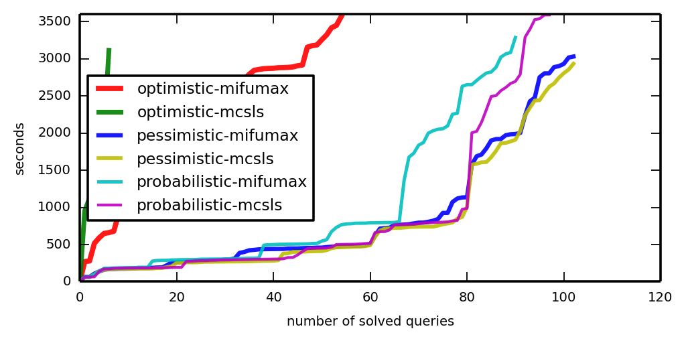
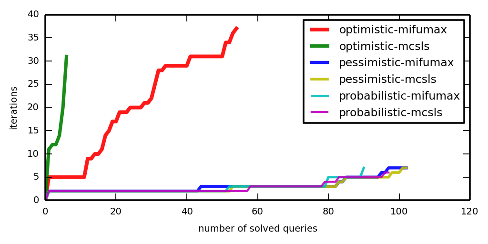

This webpage describes experiments reported in [Grigore, Yang, Abstraction Refinement by a Learnt Probabilistic Model, POPL 2016].
The main steps are
The following description assumes you have Ubuntu 14.04. The required packages can be installed as follows
sudo apt-get install openjdk-7-jdk python3-scipy python3-matplotlib
The default Java version should be 7. For example, you should see something like
USER@HOST:~$ java -version java version "1.7.0_79" OpenJDK Runtime Environment (IcedTea 2.5.6) (7u79-2.5.6-0ubuntu1.14.04.1) OpenJDK 64-Bit Server VM (build 24.79-b02, mixed mode) USER@HOST:~$ javac -version javac 1.7.0_79
If Java 7 is not your default, then make it so:
sudo update-alternatives --config javac sudo update-alternatives --config java
You need the analyzer, the programs to analyze, and helper scripts. Download this archive (84MiB) and untar it. The programs to analyze are the same as in [Zhang et al., On Abstraction Refinement for Program Analyses in Datalog , PLDI 2014]:
The archive contains
Before doing any work, set a few environment variables by saying
source setenv
Generate a list (aka script) of queries to solve.
acceleration_batch_run.py -make-script
This command takes a few minutes. It runs each of the two analyses (PolySite and Downcast) on each of the programs. It uses the cheapest abstraction. It creates a file script.txt in which it lists all assertions that might fail. (Those assertions that are seen not to fail even using the cheapest abstraction are not listed.)
There are 1450 queries. With the default time limit of 1 hour per query, solving all of them will not take more than 61 days. If you think 61 days might be too long, then feel free to edit script.txt to select only a subset of queries. Consider also using the -maxq option, as in
acceleration_batch_run.py -make-script -maxq 3
Say
acceleration_batch_run.py -mode MODE
where MODE is either optimistic (default) or pessimistic. Warning: This may take a few weeks. You may want to use the -timeout option to change the default.
Logs will be saved in a directory named MODE-logs-TIMESTAMP.
Learning is done offline, based on provenances. The previous runs didn't save provenances. We will rerun the analysis in pessimistic mode, this time saving provenances.
First, we select a subset of queries, which we know are easy.
script_from_logs.py -oo 900 -script script-for-provenance.txt pessimistic-logs-*
This command creates a file script-for-provenance.txt which is a subset of script.txt that retains queries that were solved in 900 seconds. This step is optional. In principle, it is perfectly fine to try to generate provenances for all queries. However, (a) you'll have to wait a long time, and (b) you'll need a big disk (each provenance takes >100MB).
Second, we rerun in pessimistic mode.
acceleration_batch_run.py -mode pessimistic -save-provenances -script script-for-provenance.txt
Third, we collect samples. Be warned that you need a lot of memory for this step: we used 30GiB. Alternatively, you can download the samples from our training set.
PROVENANCES_DIR=$(ls -d p*-logs-* | sort | tail -1) # the directory produced by the previous command sample_provenances.py -save-samples samples.json $PROVENANCES_DIR/provenance_*
Fourth, to learn from samples, say
compute_likelihood.py samples.json -skip PROGRAM -save-lowerbound lowerbound-PROGRAM.json optimize_likelihood.py lowerbound-PROGRAM.json -model model-PROGRAM
Here, PROGRAM is one of toba-s, javasrc-p, … The -skip option is used so that model-PROGRAM is learned only from the runs on the other programs.
Say
acceleration_batch_run.py -mode probabilistic
Logs are saved in in probabilistic-logs-TIMESTAMP. For this command, the convention of putting models in files named model-PROGRAM is important!
OK, OK: Maybe it's unreasonable to expect you to run this thing for a couple of months. Instead, you could just download our logs and untar them. Of course, it would be better if you produced your own logs. Who knows what went wrong on our servers?
Before making pictures, you may wish to check that the three methods agree.
check_logs.py -v LOGDIRS # where LOGDIRS is a list with the directories you want analyzed
To make a cactus plot, say
plot_a_cactus.py LOGDIRS
Now look at iter-cactus.png and time-cactus.png.
 
The machines we used for the logs reported here are r3.xlarge machines from the Amazon cloud. They have 30GiB of memory. Linux reports 4 cores with 5000bogomips each. There was no other load on the machine, apart from operating system stuff, of course. In particular, we did not run several analysers in parallel, although this would be possible. (Well, we did, but then we observed unacceptably high variance in the results, so we started over.)
Changelog:
20151106 added link to arXiv
20151105 first version